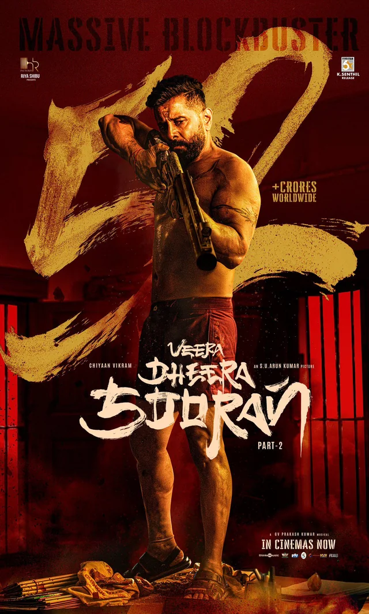

Movie Review: Veera Dheera Sooran: Part 2 (2025)
Veera Dheera Sooran: Part 2 is a 2025 Tamil-language neo-noir action thriller film directed and written by S. U. Arun Kumar, starring Vikram in the titular role. The film follows the conflict between SP Arunagiri and former mob boss Ravi, leading to intense action and a deep exploration of themes like loyalty, revenge, and moral complexity.
Development & Production
The project was first announced in October 2023 under the working title Chiyaan 62. Principal photography began in April 2024 and wrapped by November 2024. Although there were delays due to legal issues, the film was eventually released worldwide in both standard and EPIQ formats. Vikram’s 62nd film, it has generated significant anticipation, particularly among his fans.
Plot Summary
The film unfolds during a tense night at a temple festival in Madurai, where the conflict between SP Arunagiri and Ravi intensifies. Ravi, seeking revenge, recruits his former enforcer Kaali, played by Vikram, who is forced back into the violent world he left behind to protect his family. The story delves into the complexities of loyalty and revenge as Kaali confronts his past and seeks to avenge his friend’s death. The film culminates in a bloody, tense battle of survival.
Performances
Vikram delivers a compelling performance as Kaali, bringing emotional depth and raw intensity to the character. S. J. Suryah as SP Arunagiri and Prudhvi Raj as Ravi add strong performances, but it’s Vikram who dominates the screen. Suraj Venjaramoodu’s debut in Tamil cinema as Kannan, Ravi’s son, is a noteworthy addition. Dushara Vijayan as Kaali’s wife Kalaivaani adds an emotional layer to the narrative.
Direction & Screenplay
S. U. Arun Kumar’s direction shines in creating a tense atmosphere, balancing action sequences with emotional depth. The screenplay, while gritty and engaging, slows down slightly in the second half, affecting the overall pacing. The film excels in exploring complex moral dilemmas and the choices each character faces, but the slower moments could have been tightened for better flow.
Cinematography & Music
The cinematography beautifully captures Madurai’s cityscapes and the dark, gritty atmosphere of the neo-noir genre. G. V. Prakash Kumar’s soundtrack, with tracks like "Kalloorum" and "Ayla Allela," enhances the mood and intensity of the film, though some songs feel repetitive.
Editing & Pacing
The editing is efficient in maintaining the suspense during action sequences, but the film’s pacing falters in the second half, where the story’s intensity diminishes briefly. The runtime could have been trimmed to enhance its impact.
Personal Opinion on Veera Dheera Sooran: Part 2
Veera Dheera Sooran: Part 2 is a compelling film with a gripping storyline and strong performances, especially by Vikram. The theme of loyalty, revenge, and moral choices is explored deeply, giving the film a sense of emotional depth alongside intense action. The film’s ending is particularly satisfying, bringing closure to Kaali’s journey and offering a fitting conclusion to the character’s internal struggle. Overall, it’s a strong film, well worth watching for fans of neo-noir thrillers.
Verdict on Veera Dheera Sooran: Part 2
The film is an engaging action thriller with a balance of suspense, emotional depth, and a strong thematic focus on choices and consequences. Though the pacing slows down a bit in the second half, the performances and direction make it a worthwhile watch, particularly for fans of Vikram and neo-noir cinema.